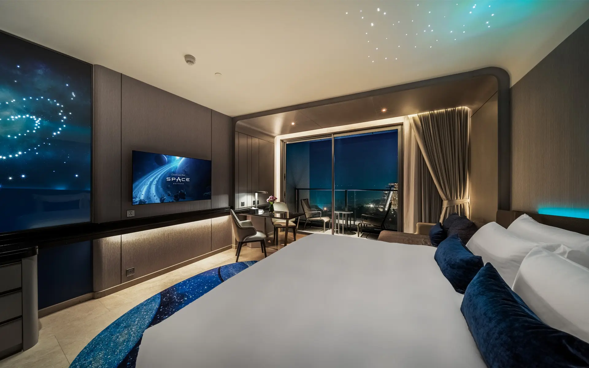
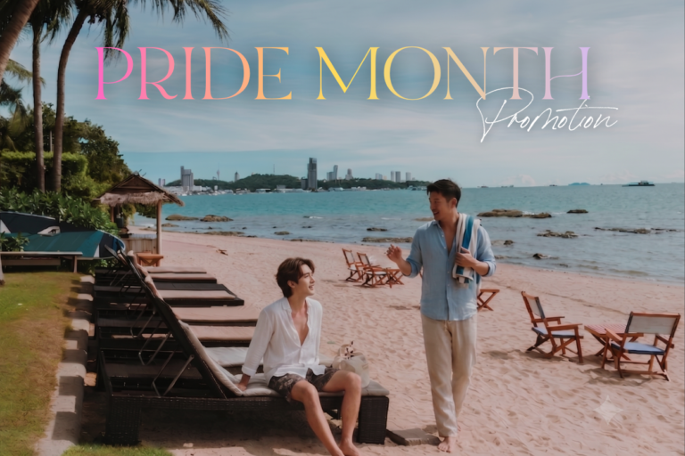
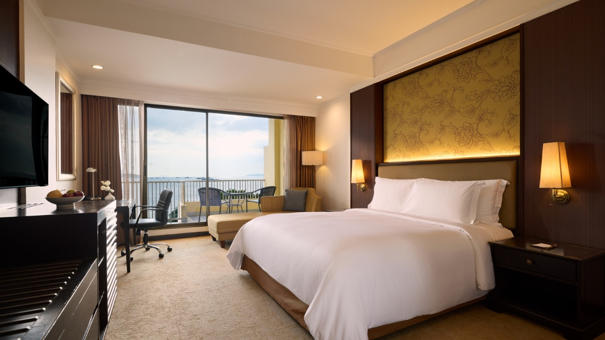
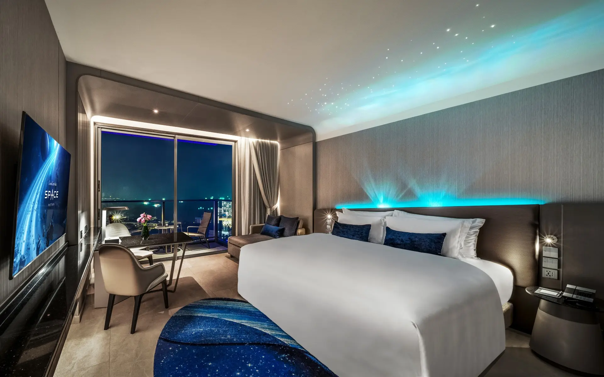

Wongamat
Roligere resortområde nord for sentrum.
Pattaya er en stor strandby nær Bangkok. Guiden fokuserer på de områdene som fungerer best for ferie: Jomtien, Na Jomtien, Wongamat og familievennlige aktiviteter.
Velg base etter reisestil før du velger hotell. Det gjør dagene enklere og reduserer unødvendig transport.
Roligere resortområde nord for sentrum.
Strand, restauranter og mer familievennlig tempo.
Resorter og stranddager litt utenfor bykjernen.
Velg Jomtien eller Na Jomtien for roligere dager.
Legg inn badeland eller familieattraksjon.
Koh Lan er en enkel båttur for stranddag.
Hvert hotell er presentert med ekte bilder hentet fra hotellets egen nettside. Sjekk alltid pris og tilgjengelighet hos hotellpartneren.

Best for: Familie, aktiviteter, barn
Temahotell med vannparkfølelse, aktiviteter og enkel familieferie.

Best for: Par, familie, strand
Strandresort nær byen med utsikt, basseng og god balanse mellom ro og Pattaya.

Best for: Familie, klassisk resort
Klassisk resort med god plass, basseng og kort vei til strand og byliv.

Best for: Familie, leilighetshotell, sentralt
Moderne leilighetshotell i sentral Pattaya med praktisk base for shopping, strand og familieferie.

Best for: Par, design, roligere område
Designpreget hotell i roligere Pratamnak-område, fint for par som vil bo litt utenfor det travleste sentrum.
Sjømat, restauranter og stort utvalg.
Mat, småbutikker og en enkel familieutflukt.
Velg lokale markeder, småbutikker og en rolig kveld fremfor å fylle hele dagen med transport.
Midlertidige kort med affiliate-lenkene lagt inn. Titler og tekst kan byttes når de riktige aktivitetsnavnene er klare.

Familievennlig opplevelse i Pattaya. Navnet kan byttes når riktig aktivitet er bekreftet.
Se hos Klook →
Dagstur eller attraksjon i området. Navnet kan byttes når riktig aktivitet er bekreftet.
Se hos Klook →
Strand, båt eller øyopplevelse. Navnet kan byttes når riktig aktivitet er bekreftet.
Se hos Klook →
Opplevelse for familier og par. Navnet kan byttes når riktig aktivitet er bekreftet.
Se hos Klook →
Velvære, spa eller rolig pause. Navnet kan byttes når riktig aktivitet er bekreftet.
Se hos Klook →
Mat, show eller kveldsopplevelse. Navnet kan byttes når riktig aktivitet er bekreftet.
Se hos Klook →
Natur, utsikt eller dagsutflukt. Navnet kan byttes når riktig aktivitet er bekreftet.
Se hos Klook →
Praktisk aktivitet å legge inn i ferien. Navnet kan byttes når riktig aktivitet er bekreftet.
Se hos Klook →
Pattaya-opplevelse med enkel booking. Navnet kan byttes når riktig aktivitet er bekreftet.
Se hos Klook →
Lokal opplevelse i Pattaya. Navnet kan byttes når riktig aktivitet er bekreftet.
Se hos Klook →